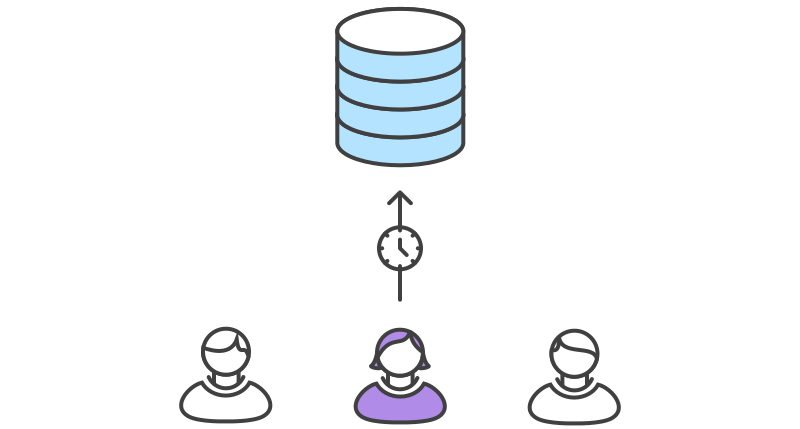
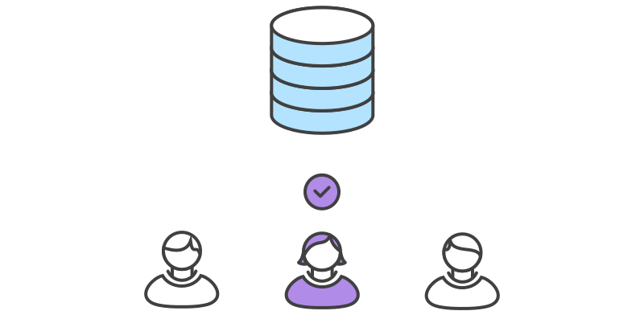
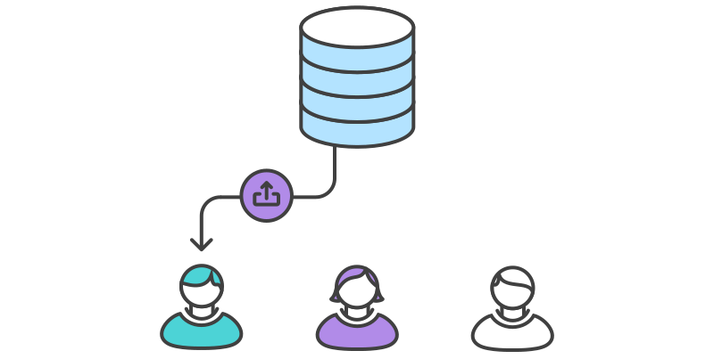

Software Engineering
by Matthew Byrne, 16-Dec-2015
Learning Objectives
- Gain overview of some big concepts
- Why certain issues are important
- Share experiences amongst the group
- Ways to make work easier
Version Control
(a.k.a. Source Control and Revision Control)
The management of changes to:
- Source code
- Documents or Spreadsheets
- Deployment Configurations or Images
- Database contents
Is it important?
Yes, if you ever intend to:
- Collaborate with others
- Do anything that may break existing code - at any stage
- Refactor your code
- Support multiple versions of your code
Notable Tools:
- Git: git
- Mercurial: hg
- Subversion: svn
- CVS: cvs
GitFlow
A opinion (v. commonly followed) on how to use Git
A rapid intro to concepts and considerations
Mary begins a new feature
git checkout -b marys-feature master
Mary makes a few commits and pushes her work

git push -u origin marys-feature
Mary finishes feature

git push
Mary issues pull request; Bill receives
Mary makes changes as suggested by Bill

Mary's changes are published

git checkout master
git pull
git pull origin marys-feature
git push
But what about another developer?

They need to 'rebase'
git rebase

We may end up with something like...

Continuous Integration
Continuous Integration is a software development practice where members of a team integrate their work frequently, usually each person integrates at least daily - leading to multiple integrations per day. Each integration is verified by an automated build (including test) to detect integration errors as quickly as possible.
Testing
Testing categories:
- Unit
- Integration
- Performance
- Security/Penetration
- A/B
- Alpha/Beta
- lots of others, including Regression!
Discussion:
What are the benefits of testing?
If we don't write the test first, it's not Test Driven Development
What are the benefits of TDD?
If we don't write the test first, it's not Test Driven Development
What are the benefits of TDD?
What does a Unit Test look like?
import unittest
class DefaultWidgetSizeTestCase(unittest.TestCase):
def runTest(self):
widget = Widget('The widget')
self.assertEqual(widget.size(),
(50, 50),
'incorrect default size')
The corresponding class looks like
class Widget:
def __init__(self, name):
# do something
def size(self):
# set h and w
return (h, w)
How about an Integration Test?
describe('GET /user/:id', function(){
describe('when present', function(){
it('should display the users pets', function(done){
request(app)
.get('/user/1')
.expect(/\/pet\/1">Loki/)
.expect(/\/pet\/2">Jane/)
.expect(200, done)
})
})
describe('when not present', function(){
it('should 404', function(done){
request(app)
.get('/user/123')
.expect(404, done);
})
})
})
And Performance Testing?
httperf --server hostname \
--port 80 --uri /test.html \
--rate 150 --num-conn 27000 \
--num-call 1 --timeout 5
Total: connections 27000 requests 26701 replies 26701 test-duration 179.996 s
Connection rate: 150.0 conn/s (6.7 ms/conn, <=47 concurrent connections)
Connection time [ms]: min 1.1 avg 5.0 max 315.0 median 2.5 stddev 13.0
Connection time [ms]: connect 0.3
Request rate: 148.3 req/s (6.7 ms/req)
Request size [B]: 72.0
Reply rate [replies/s]: min 139.8 avg 148.3 max 150.3 stddev 2.7 (36 samples)
Reply time [ms]: response 4.6 transfer 0.0
Reply size [B]: header 222.0 content 1024.0 footer 0.0 (total 1246.0)
Reply status: 1xx=0 2xx=26701 3xx=0 4xx=0 5xx=0
CPU time [s]: user 55.31 system 124.41 (user 30.7% system 69.1% total 99.8%)
Net I/O: 190.9 KB/s (1.6*10^6 bps)
Errors: total 299 client-timo 299 socket-timo 0 connrefused 0 connreset 0
Errors: fd-unavail 0 addrunavail 0 ftab-full 0 other 0
Agile vs Waterfall methodolgies
Waterfall Overview

Some Characteristics:
- Requirements known in advance
- Minimize rework
- Have documentation in advance
Agile Overview
Agile Manifesto
*
- Early / Continuous Delivery
- Requirement changes are welcome
- Frequent Delivery
- Cooperation between devs and stakeholders
- Motivated Individuals
- Face to Face conversation
- Measure of Progress = Working Software
- Sustainable, constant pace
- Continuous attention to technical excellence
- Simplicity is essential
- Self-organizaing teams
- Regular team "retuning"
Definition of “Done”
“The team agrees on, and displays prominently somewhere in the team room, a list of criteria which must be met before a product increment "often a user story" is considered "done".”
Definition of “Done”
Includes creating test data, actually testing, ensuring it's deployable, documenting

Agile in Practice: Scrum
~2 week Sprints
Per-Sprint planning session
End of Sprint: Ship to QA env
Large tasks broken up and difficulty rated
Order of development negotiated with client
Agile's usefulness to you:
Often start out with simple scripts
Client confusion / lack of clarity
Personnel rotation
Fork and re-use code
Code Quality
We can have version control & tests,
and yet still have poor quality code.
Correctly guess my view on this ONE function and you can have a guilt-free chocolate.
function fileUpload($window, Modal) {
return {
restrict: 'A',
scope: {
sendData: '&',
reupload: '='
},
templateUrl: 'components/fileUpload/fileUpload.html',
link: function (scope, element) {
// Get file upload element.
var input = element.find('input');
// Watch for file change.
input.bind('change', function () {
// continued
// Extract first and only uploaded file.
var file = input[0].files[0];
// Check that the user's browser supports the FileReader API.
if ($window.FileReader) {
var reader = new $window.FileReader();
// If an error occurs while reading the file a modal will display.
var modalContent;
// Handle read complete.
reader.onload = function (e) {
// Get the name of the file.
var name = input[0].files[0].name;
// continued
// Extract file extension.
var extension = name.split('.').pop().toLowerCase();
// The file must be a CSV file.
if (extension === 'csv') {
try {
// Extract file upload results.
var contents = e.target.result;
// Have d3 convert text to object.
var data = d3.csv.parse(contents);
// Send results back.
scope.sendData({data: data, file: name});
// continued
} catch (e) {
// Trying to read the file has failed, the user will be notified.
modalContent = {
title: 'Error Reading File',
text: 'There is an issue with the file being uploaded. Please try ' +
'again or use a different file.'
};
}
} else {
// The user has not uploaded a CSV. Display an error dialog.
modalContent = {
title: 'Incorrect File Type',
text: 'You have uploaded a ' + extension.toUpperCase() +
' file. This is not supported. Please upload a CSV file.',
icon: 'warning'
};
}
// continued
// Display a modal if necessary.
if (!_.isUndefined(modalContent)) {
// Regardless of the error, a close button and warning icon
// will display on the modal dialog.
modalContent.icon = 'warning';
modalContent.buttons = [{
label: 'Close',
icon: 'times',
click: function () {
Modal.hide();
}
}];
// Display the modal to the user.
Modal.show(modalContent);
// continued
// Poor angular will be lost now since FileReader was used.
// Need to $apply() to get the modal to appear.
scope.$apply();
}
};
// Read file contents as text.
reader.readAsText(file);
} else {
// The FileReader API is missing, the user cannot continue.
// continued
Modal.show({
title: 'Browser Issue',
text: 'The browser you are using does not support a ' +
'feature necessary for uploading data in this application. ' +
'Please use a more up to date browser to continue.',
icon: 'warning',
buttons: [{
label: 'Close',
icon: 'times',
click: function () { Modal.hide(); }
}]
});
}
});
}
};
}
So...
Another example
def build_month_end_df_from_activity_df(activity_df):
"""
Returns a month-end Data Frame based on the transaction-day data
Some colums take the last value, others the sum.
"""
monthly_df = pd.DataFrame()
last_vals = activity_df.groupby(pd.TimeGrouper('1M')).last()
sum_vals = activity_df.groupby(pd.TimeGrouper('1M')).sum()
last_cols = SharedUtils.get_cols_for_last_vals()
sum_cols = SharedUtils.get_cols_for_summation()
monthly_df[last_cols] = last_vals[last_cols]
monthly_df[sum_cols] = sum_vals[sum_cols]
return monthly_df
Why is this better?
- Sensible Name
- Readable
- Breaks into distinct tasks
- Modification is Feasible
A special word on
Stored Procecures
CREATE PROCEDURE create_email_address ( -- Procedure heading part begins
name1 VARCHAR2,
name2 VARCHAR2,
company VARCHAR2,
email OUT VARCHAR2
) -- Procedure heading part ends
AS
-- Declarative part begins (optional)
error_message VARCHAR2(30) := 'Email address is too long.';
BEGIN -- Executable part begins (mandatory)
email := name1 || '.' || name2 || '@' || company;
EXCEPTION -- Exception-handling part begins (optional)
WHEN VALUE_ERROR THEN
DBMS_OUTPUT.PUT_LINE(error_message);
END build_email_address;
class User(models.Model):
company = models.CharField(max_length=100)
name1 = models.CharField(max_length=100)
name2 = models.CharField(max_length=100)
def build_username(self):
return name1 + '.' + name2
def build_email_address(self):
return build_username() '@' + company
class Company(models.Model):
name = models.CharField(max_length=100)
class User(models.Model):
company = models.ForeignKey(Company)
name1 = models.CharField(max_length=100)
name2 = models.CharField(max_length=100)
def build_username(self):
return name1 + '.' + name2
def build_email_address(self):
return build_username() '@' + company.name
class Company(models.Model):
name = models.CharField(max_length=100)
class User(models.Model):
company = models.ForeignKey(Company)
first_name = models.CharField(max_length=100, db_column='name1',)
last_name = models.CharField(max_length=100, db_column='name2',)
def build_username(self):
return first_name + '.' + last_name
def build_email_address(self):
return build_username() '@' + company.name
Disadvantages
- Verbose
- Scope for Bugs
- Longer to Read/Understand/Write
- Tightly Coupled
- VERY Hard to Test
However...
- You may have no choice
- They *can* be highly performanant
- My suggestion: Only for DBA tasks and/or invariant data models
Target for D.Nav and Audit Tools
Some other Useful and Important concepts
Convention Over Configuration
“ A software design paradigm which seeks to decrease the number of decisions that developers need to make, gaining simplicity, but not necessarily losing flexibility. ”
Library vs Framework
“ A library performs specific, well-defined operations. ”
“ A framework is a skeleton where the application defines the "meat" of the operation by filling out the skeleton. The skeleton still has code to link up the parts but the most important work is done by the application. ”
Inversion of Control
I hope you can take a few things from today:
- LT support considerations in any new work
- A willingness to use Git*
- Testing makes your life a lot easier
- So does good quality code!